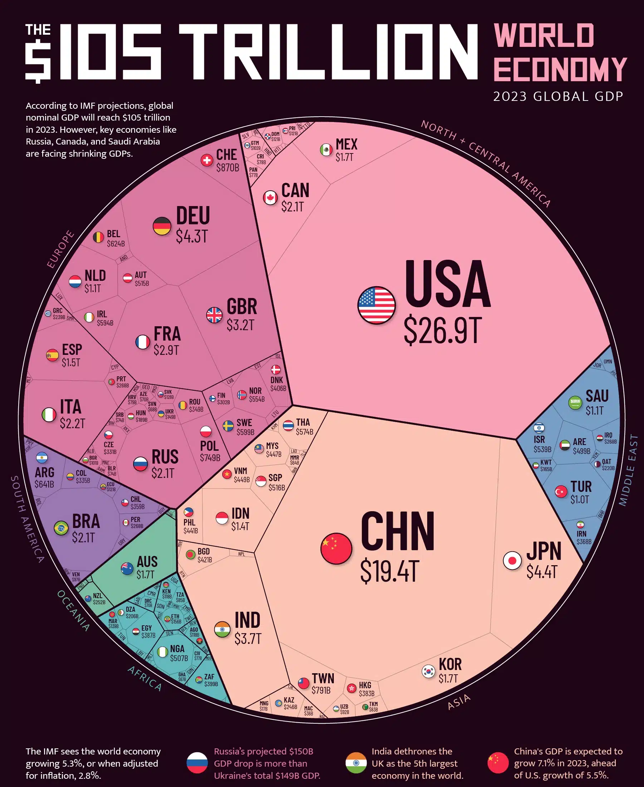
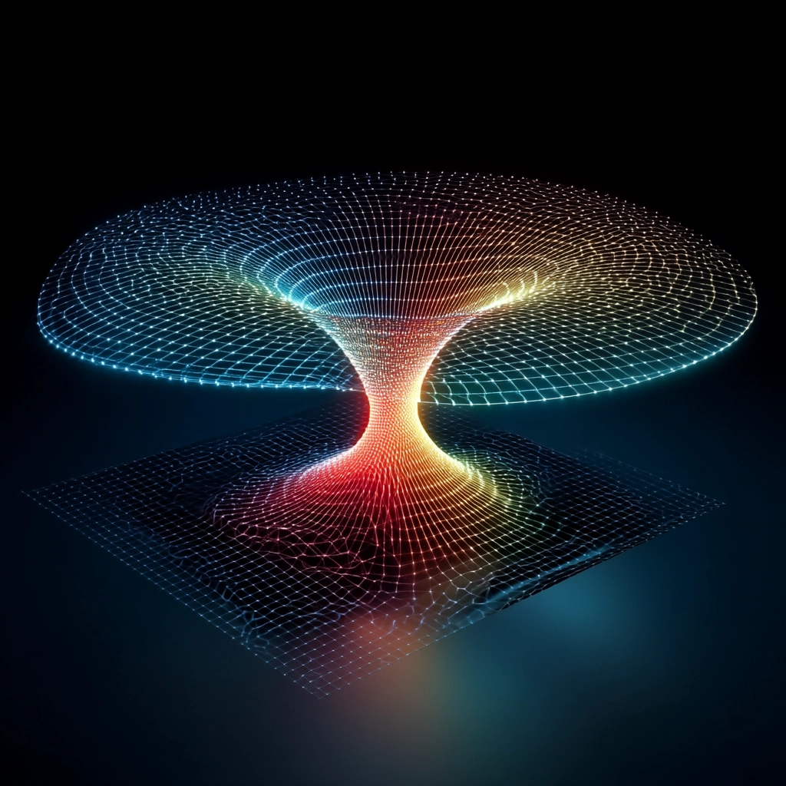
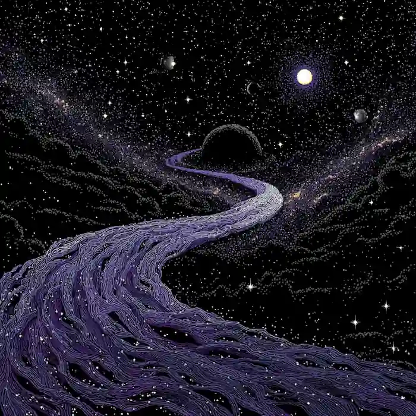
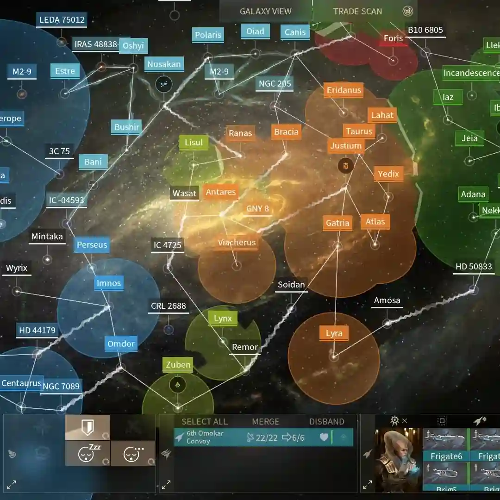

Lore

Ship Supremacy
a destroyer can blockade a defenseless planet forever until relieved
a fleet can blockade a defenseless system forever until relieved
a single destroyer can glass a habitable planet given the planet's defenseless and there is enough ammunition

Cost of a Ship
A dreadnought costs the annual GDP of IRL Earth(2025), assuming Earth have all the necessary materials, manpower, technology, knowhow and machinery.
Repairing ships is cheaper and easier, especially if you have an intact hull.
The poorest planet in Stardust exceeded the GDP of IRL Earth 2025 by 10x.
Credits
Each planet have their own currency, but if they want to trade with other planets or transact across systems, they use Credits.
Credits (aka Dust) is a futuristic cryptocurrency that allows absolutely fair, scam-free, untraceable trade. Everyone accepts credits, regardless of origin.
Wealth
100 million credits = the wealth of a typical non-Luos businessman, top 0.1% richest person in a non-Luos planet
1 billion credits = the wealth of a typical Luos 'middle class', top 0.1% in a non-Luos system.
At its height, the richest Luos citizen had a net worth of 1 trillion credits and the largest corporation in the Luos Syndicate had a market cap of 300 trillion credits.

FTL Travel
Most ships travel at relativistic speeds in vacuum, and use warp drives to achieve FTL speeds.
How Warp Drives work: when a ship activates its Warp Drive, it will enter the nearest Dark River, a Calabi-Yau manifold between two systems, and exit at the end of the River.
The activation takes a minute, obvious, and detectable. No better warp drive exists.

Dark River
The entry/exit point of a River is anywhere within a 1LY omni-radius from a known system's center. The ship(s) decides where.
Matter cannot exist inside a Dark River without Warp Drives (so no Dark River battles). Incoming matter cannot displace matter at the exit point. Space expands temporarily to accomodate incoming matter.
Time does not flow in a Dark River, ships passing through Dark Rivers can't perceive anything, they just appear instantaneously on the other side.

Space
Known Space: sectors that have at least 1 Dark River mapped
Unknown/Dark Space: sectors that don't have or known to have a Dark River
Dead Space: sectors without any celestial bodies, ergo no Dark River
Gameplay
Frame Resources, Credits, and Required Crew must go to zero because that's how military budget works!
Do things in order to avoid bugs and follow the rules!
Hover on each image to see the bibliography. The format is [image title]-[author]-[source]